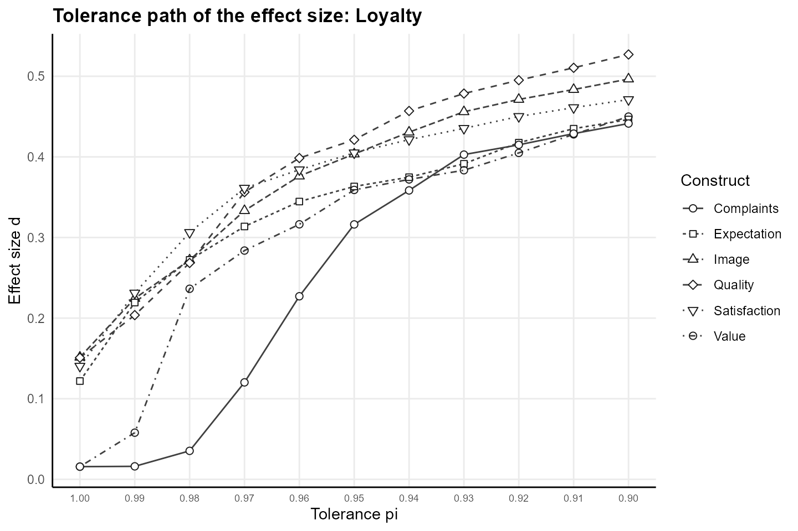
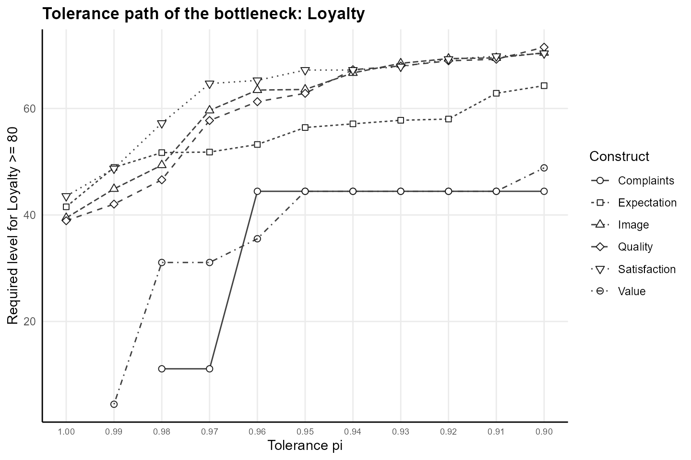

A bottleneck states the level of a predictor required for a target
level of the target construct. Necessary Condition Analysis (NCA) with
the CE-FDH ceiling sets the requirement at the lowest predictor score
among the successful cases, the cases that attain the target level, so
the single most efficient successful case, the one with the lowest
predictor score, sets the requirement (Dul 2016). Quantile Necessary
Condition Analysis (QNCA) adds the tolerance pi in (0, 1]:
the requirement is the type-1 quantile at probability
1 - pi of the predictor scores among the successful cases,
and the share 1 - pi of the successful cases may sit below
the requirement (Deja 2026). At pi = 1 the QNCA frontier
equals the CE-FDH ceiling.
For a target attained by k successful cases, the
quantile is the order statistic of rank
max(1, ceiling(k * (1 - pi))). Across targets, a running
maximum makes the frontier non-decreasing, so a requirement reached at a
lower target carries to every higher target (Deja 2026).
The example uses the mobi data of seminr,
customers of a mobile phone provider in the European customer
satisfaction index model, with loyalty at level 80 of 100 as the target
and the tolerance pi = 0.95 for the bottleneck.
library(cIPMA)
library(seminr)
mm <- constructs(
composite("Image", multi_items("IMAG", 1:5)),
composite("Expectation", multi_items("CUEX", 1:3)),
composite("Quality", multi_items("PERQ", 1:7)),
composite("Value", multi_items("PERV", 1:2)),
composite("Satisfaction", multi_items("CUSA", 1:3)),
composite("Complaints", single_item("CUSCO")),
composite("Loyalty", multi_items("CUSL", 1:3))
)
sm <- relationships(
paths(from = "Image", to = c("Expectation", "Satisfaction", "Loyalty")),
paths(from = "Expectation", to = c("Quality", "Value", "Satisfaction")),
paths(from = "Quality", to = c("Value", "Satisfaction")),
paths(from = "Value", to = "Satisfaction"),
paths(from = "Satisfaction", to = c("Complaints", "Loyalty")),
paths(from = "Complaints", to = "Loyalty")
)
pls <- estimate_pls(mobi, mm, sm)
boot <- bootstrap_model(pls, nboot = 200, cores = 1, seed = 123)
scales <- setNames(rep(list(c(1, 10)), ncol(mobi)), names(mobi))
res <- cipma(boot, "Loyalty", mobi, scales, target_level = 80, pi = 0.95,
B = 499, seed = 1, pls_model = pls)The example draws 200 bootstrap resamples and 499 permutations, which
keeps the computation short. The number of bootstrap resamples is a
choice of the analyst in bootstrap_model(), and
cipma() draws 1999 permutations by default.
The requirement at two tolerances
The requirement of image for loyalty of at least 80 follows from the
customers who attain the target. The rescaled scores of
cipma() give the successful customers, and the tolerance
path of cipma() gives the requirement at
pi = 1 and at pi = 0.95.
x <- res$Data_Rescaled$Image
y <- res$Data_Rescaled$Loyalty
successful <- y >= 80
k <- sum(successful)
path <- res$Tolerance_Path[res$Tolerance_Path$Construct == "Image", ]
required <- sapply(c(1, 0.95), function(p) path$Required_Level[abs(path$pi - p) < 1e-9])
data.frame(
pi = c(1, 0.95),
successful = k,
rank = sapply(c(1, 0.95), function(p) qnca::qnca_rank(k, p)),
required = round(required, 3),
successful_below = sapply(required, function(r) sum(x[successful] < r)),
all_below = sapply(required, function(r) sum(x < r))
)
#> pi successful rank required successful_below all_below
#> 1 1.00 102 1 39.448 0 4
#> 2 0.95 102 6 63.566 5 54
round(sort(x[successful])[1:6], 3)
#> [1] 39.448 44.183 49.354 59.627 63.451 63.566At pi = 1 the requirement, 39.448, is the lowest image
score among the 102 customers with loyalty of at least 80, and every
successful customer holds at least the requirement. At
pi = 0.95 the rank is 6, the requirement is the sixth
smallest image score, 63.566, and 5 successful customers sit below the
requirement, within the tolerance of 5% of 102. The tolerance counts
successful customers, whereas the share of failing cases of the cIPMA
counts all customers: 54 of all customers lie below the requirement at
pi = 0.95 and 4 at pi = 1.
Tail size
The rank grows with the number of successful cases, and a small set of successful cases leaves the rank at 1.
With 20 successful cases the rank at pi = 0.95 is 1, the
minimum and the strict requirement, and with 21 successful cases the
rank is 2. High targets that few cases attain therefore keep the strict
requirement at a tolerance below 1, and a report marks the bottlenecks
of high targets as limited by tail size (Deja 2026).
Necessity at the strict limit
cipma() decides necessity at pi = 1: a
predictor is necessary when the CE-FDH effect size d
reaches 0.10 and the permutation p-value stays below 0.05. The landmark
of 0.10 belongs to the CE-FDH effect size of NCA (Dul 2016). The effect
size d_pi at a tolerance below 1 measures the empty zone to
the left of the QNCA frontier at pi, a frontier that lies
on or above the CE-FDH ceiling, so d_pi rises as
pi falls. Effect sizes at pi < 1 are
relative to the tolerance and compare predictors at one tolerance, and
the NCA landmark of 0.10 applies at pi = 1.
The analyst fixes the tolerance of the bottleneck before the
analysis, on substantive grounds and independently of the resulting
p-value, and keeps pi = 1 as the anchor of NCA (Deja
2026).
The path from 1.00 to 0.90
cipma() computes the effect size and the required level
at the target for every tolerance of the argument pi_path,
by default 1.00 to 0.90 in steps of 0.01.
summary(res, detail = "full") prints both paths and the
bottleneck table across outcome levels at the chosen tolerance.
summary(res, detail = "full")
#> Combined importance-performance map analysis
#> Target construct: Loyalty, target level: 80, cases: 250
#> Tolerance of the bottleneck: pi = 0.95; permutations: 499; outcome levels: 400 (test: 100); qnca 0.4.0
#>
#> Combined map
#> Construct Importance Performance d p Necessary Required Failing
#> Image 0.399 73.5 0.151 0.0140 yes 63.566 21.6%
#> Expectation 0.218 72.5 0.122 0.0100 yes 56.419 10.0%
#> Quality 0.323 75.0 0.151 0.0040 yes 62.839 16.4%
#> Value 0.101 62.3 0.016 0.5600 no 44.444 14.8%
#> Satisfaction 0.521 72.5 0.140 0.0020 yes 67.209 29.2%
#> Complaints 0.067 67.4 0.016 0.3720 no 44.444 10.8%
#>
#> PLS-SEM significance, effect at the chosen tolerance, failing cases
#> Construct PLS_p d_0.95 p_0.95 Failing_cases
#> Image <0.0001 0.404 0.0020 54
#> Expectation <0.0001 0.363 0.0580 25
#> Quality <0.0001 0.421 0.0020 41
#> Value 0.0143 0.359 0.0020 37
#> Satisfaction <0.0001 0.405 0.0020 73
#> Complaints 0.2906 0.316 0.0020 27
#>
#> Readings
#> - Image is necessary at the strict limit (d = 0.151, p = 0.0140); the required level of Image for Loyalty >= 80 at pi = 0.95 is 63.566, with 21.6% of the cases below the required level.
#> - Expectation is necessary at the strict limit (d = 0.122, p = 0.0100); the required level of Expectation for Loyalty >= 80 at pi = 0.95 is 56.419, with 10.0% of the cases below the required level.
#> - Quality is necessary at the strict limit (d = 0.151, p = 0.0040); the required level of Quality for Loyalty >= 80 at pi = 0.95 is 62.839, with 16.4% of the cases below the required level.
#> - Value is not necessary at the strict limit (d = 0.016, p = 0.5600); the required level of Value for Loyalty >= 80 at pi = 0.95 is 44.444, with 14.8% of the cases below the required level.
#> - Satisfaction is necessary at the strict limit (d = 0.140, p = 0.0020); the required level of Satisfaction for Loyalty >= 80 at pi = 0.95 is 67.209, with 29.2% of the cases below the required level.
#> - Complaints is not necessary at the strict limit (d = 0.016, p = 0.3720); the required level of Complaints for Loyalty >= 80 at pi = 0.95 is 44.444, with 10.8% of the cases below the required level.
#>
#> Effect sizes at pi = 0.95 are relative to the tolerance and rise as pi falls;
#> the NCA landmark of 0.10 applies to the CE-FDH effect size at pi = 1.00.
#>
#> Tolerance path: effect size d
#> pi Image Expectation Quality Value Satisfaction Complaints
#> 1.00 0.151 0.122 0.151 0.016 0.140 0.016
#> 0.99 0.224 0.219 0.204 0.058 0.231 0.016
#> 0.98 0.272 0.272 0.268 0.236 0.306 0.035
#> 0.97 0.333 0.314 0.356 0.284 0.361 0.120
#> 0.96 0.376 0.345 0.399 0.316 0.384 0.227
#> 0.95 0.404 0.363 0.421 0.359 0.405 0.316
#> 0.94 0.431 0.375 0.457 0.372 0.421 0.358
#> 0.93 0.456 0.391 0.479 0.383 0.435 0.403
#> 0.92 0.471 0.418 0.495 0.405 0.450 0.415
#> 0.91 0.484 0.435 0.510 0.428 0.461 0.429
#> 0.90 0.497 0.446 0.527 0.450 0.471 0.441
#>
#> Tolerance path: required level for Loyalty >= 80
#> pi Image Expectation Quality Value Satisfaction Complaints
#> 1.00 39.448 41.530 38.918 NN 43.535 NN
#> 0.99 44.892 48.922 42.039 4.456 48.707 NN
#> 0.98 49.354 51.710 46.600 31.076 57.232 11.111
#> 0.97 59.627 51.807 57.735 31.076 64.673 11.111
#> 0.96 63.451 53.235 61.271 35.532 65.264 44.444
#> 0.95 63.566 56.419 62.839 44.444 67.209 44.444
#> 0.94 66.667 57.110 67.279 44.444 67.209 44.444
#> 0.93 68.475 57.779 67.964 44.444 67.850 44.444
#> 0.92 69.362 58.011 68.944 44.444 69.253 44.444
#> 0.91 69.491 62.851 69.236 44.444 69.795 44.444
#> 0.90 70.452 64.278 71.502 48.843 70.337 44.444
#>
#> Bottleneck table at pi = 0.95 (NN: no requirement; NA: level not attained)
#> Outcome_Level Image Expectation Quality Value Satisfaction Complaints
#> 0 49.277 51.041 46.600 26.620 47.897 11.111
#> 10 50.352 51.041 49.303 31.076 48.707 22.222
#> 20 50.647 51.710 49.802 31.076 49.299 22.222
#> 30 50.978 51.710 49.802 31.076 49.299 22.222
#> 40 54.311 51.710 51.823 33.275 52.970 33.333
#> 50 55.233 51.807 55.117 33.275 53.561 33.333
#> 60 59.357 53.235 57.404 33.333 57.232 33.333
#> 70 59.357 56.255 59.035 39.988 63.538 33.333
#> 80 63.566 56.419 62.839 44.444 67.209 44.444
#> 90 63.566 56.419 67.964 44.444 67.209 44.444
#> 100 63.566 56.419 67.964 44.444 70.387 44.444The effect size of image grows from 0.151 at pi = 1.00
to 0.497 at pi = 0.90, and the required level of image for
loyalty of at least 80 grows from 39.448 to 70.452. The largest step of
the effect size of image lies between pi = 1.00 and
pi = 0.99, from 0.151 to 0.224.
At pi = 1.00 the requirement of value for loyalty of at
least 80 equals the lowest value score of the sample, which the
bottleneck table marks as NN, no requirement. At pi = 0.99
the requirement of value is 4.456 and at pi = 0.98 31.076,
while the effect size of value rises from 0.016 at
pi = 1.00 to 0.236 at pi = 0.98.
round(sort(res$Data_Rescaled$Value[successful])[1:3], 3)
#> [1] 0.000 4.456 26.620
round(min(res$Data_Rescaled$Value), 3)
#> [1] 0One successful customer has a value score of 0, the lowest value
score of the sample, and places the strict requirement of value at the
bottom of the scope. The second smallest value score among the
successful customers, 4.456, is the requirement at
pi = 0.99.
Reading the path
The tolerance path describes how far the strict boundary rests on the most efficient successful cases. A steep path flags outlier-fragility: the CE-FDH bottleneck of the target depends on one or a few cases, and the effect size moves once the tolerance admits the efficient cases below the requirement. A flat path over the tolerances fixed before the analysis suggests limited dependence on the cases with the lowest predictor scores (Deja 2026). The path leaves spuriousness, an empty zone produced by correlation, skewness or sufficiency, outside the diagnosis, because every member of the path may move together.
plot(res, type = "path") draws the effect size of every
predictor across the tolerances. The path rises or stays level for every
predictor, because the frontier at a lower tolerance lies on or above
the frontier at a higher tolerance (Deja 2026).
plot(res, type = "path")
Effect size of each predictor of loyalty from pi = 1.00 to pi = 0.90 in steps of 0.01 for the mobi data. The value at pi = 1.00 is the CE-FDH effect size of NCA; the values at pi < 1 are relative to the tolerance.
plot(res, type = "bottleneck") draws the required level
of every predictor for the target level across the tolerances.
plot(res, type = "bottleneck")
Required level of each predictor for loyalty of at least 80, on the rescaled 0–100 scale, from pi = 1.00 to pi = 0.90 in steps of 0.01. A missing point marks a tolerance at which the requirement equals the lowest score of the predictor (NN).
The required level of complaints jumps from 11.111 at
pi = 0.97 to 44.444 at pi = 0.96. Complaints
is a single item, and the rescaled scores of complaints take few
distinct values.
sort(unique(round(res$Data_Rescaled$Complaints, 3)))
#> [1] 0.000 11.111 22.222 33.333 44.444 55.556 66.667 77.778 88.889
#> [10] 100.000The ten rescaled values of complaints lie 11.111 apart, so the required level of complaints moves in steps of at least 11.111, and a path in large steps reflects the discrete scale of the predictor.
References
- Deja, M. (2026). Quantile Necessary Condition Analysis: A Tolerance-Parameterized Generalization of Necessary Condition Analysis. Quality & Quantity (accepted for publication).
- Dul, J. (2016). Necessary Condition Analysis (NCA): Logic and methodology of “necessary but not sufficient” causality. Organizational Research Methods, 19(1), 10–52. https://doi.org/10.1177/1094428115584005